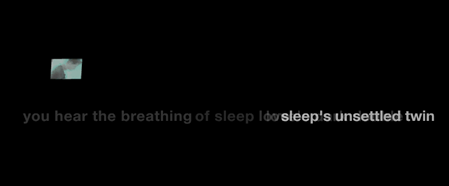

soy una escritora, tallerista y programadora (en formación) con una inclinación incómoda hacia la nostalgia. inquieta por naturaleza, siempre estoy buscando proyectos creativos de los que pueda participar. mis principales intereses son la poesía, la literatura digital, y la escritura ensayística, pero también tengo experiencia con la narrativa, el collage, la traducción, y la edición literaria, entre otros campos y medios. he publicado muchas de mis obras en formato de fanzine, tanto en inglés como en español, y mi primer poemario de habla hispana "pena vanidosa de un cuerpo fluorescente" está actualmente en proceso para ser publicado por la editorial calabaza del diablo.
(...) La implementación de medios como el video, el sonido, la imagen y la animación dan paso además a una libertad del autor para experimentar en su proceso creativo, dado que las “connotaciones” (refiriéndonos con este término a las ramificaciones asociativas o constelaciones del objeto) de los fragmentos no están limitadas por una necesidad imperativa de relaciones lingüísticas o narrativas entre uno y otro; los medios no-textuales tienen su propio código o lenguaje, completamente diferente al verbal pero igualmente apto para entregar información, ambientar, o enfatizar aspectos relevantes del texto. Los dialectos no-verbales comúnmente se manifiestan de forma subtextual, lo cual permite a la obra evocar sensaciones e ideas sin necesidad de explicitarlas, o en su defecto, de hacer hincapié en algo importante sin caer en la redundancia. Ask me for the moon de John David Zuern, obra incluida en Electronic Literature Collection Vol. 3, utiliza texto, imagen, sonido y movimiento. Los versos aparecen y se desvanecen cuando otro toma su lugar, así como también un paisaje se va completando y modificando con el paso de cada línea.

Los versos “love’s dark double/sleep’s unsettled twin” aparecen a la vez que la imagen se va a negro, dejando un televisor solitario en medio de la pantalla, lo cual se relaciona de manera directa con los versos que lo preceden, no obstante, esto no tiene el mismo efecto que tendría si se tratase de, por ejemplo, un fotolibro con una técnica similar; aquí los recursos que se emplean son explotados para crear una ambientación particular - semi-onírica, melancólica - que se da especialmente con la animación. Las transiciones entre un verso y otro son rápidas, pero sutiles, suaves, lo que le da al poema un aire de algo que bordea en la tristeza. La paleta seleccionada consta mayoritariamente blanco y negro, con algunos detalles de color, y tiene un bajo contraste; elementos como éstos son tan relevantes como lo narrado, ya que funcionan como palafitos que sostienen al texto. En este caso los recursos digitales sirven mayoritariamente para establecer el tono de la obra en su totalidad, y lo hacen casi por completo a través de la imagen, el color y nuestra percepción del movimiento.
Para navegar un texto que involucra elementos audiovisuales (incluyendo dentro de esta definición la animación, sea interactiva o no) es necesaria una disposición diferente que tome en cuenta el punto anterior, como lo explica Stephanie Strickland en Born Digital: “reading e-lit requires taking an aesthetic attitude toward the textscape as an object that stimulates the senses. . .”. Si bien no siempre ocurre de manera consciente, está implícito dentro del texto que video, animación, imagen y sonido cumplen una función específica y no son netamente añadiduras estéticas sin otro propósito que embellecer el texto. La mayor parte de las obras que incluyen estos elementos los implementan con el fin de dar al texto un carácter interactivo, inclusive si éste se genera a partir de elementos sencillos como links; el usuario debe tener en consideración su rol dentro de la obra, y adquirir un entendimiento de su lógica interna para poder explorarla. (...).
El propósito del presente ensayo es analizar la construcción identitaria de la población latinoamericana como reacción a sus circunstancias en base a un tema que, a simple vista, puede parecer alejado de lo que hemos discutido, pero que es un reflejo claro de estas condiciones sociales: la literatura.
Esta labor es compleja, dado que unificar en su totalidad a la literatura hispanoamericana es tan difícil como definir la identidad latina en sí. No obstante, existen patrones dentro de esta rama de la literatura que evidencian ciertos rasgos que pueden ayudarnos a confeccionar una descripción coherente de lo que podría llamarse nuestra identidad territorial.
Encontramos un denominador común que prevalece dentro de la novela y el cuento en Latinoamérica en la estética narrativa de estos textos: gran parte de los textos más emblemáticos de habla hispana recurren a una voz, un estilo de narración experimental y por lo general fragmentado que muchas veces puede sentirse incluso laberíntico. Un ejemplo claro es Rayuela de Cortázar, con su modalidad de lectura lúdica y desordenada, pero también podemos pensar en el vaivén narrativo entre los dos hablantes de Pedro Páramo de Juan Rulfo, oscilando entre presente y pasado sin delimitaciones claras, o en La nave de los locos de Cristina Peri Rossi, que contiene dos relatos paralelos, el de la historia del exiliado Equis y las descripciones del Tapiz de la creación, y por supuesto, los escritos de Borges con toda su complejidad literaria.
Hay algo escondido entrelíneas en los textos que emplean este artificio en cuanto al propósito y las raíces de este último: lo que se vislumbra en estas prosas fracturadas son los atisbos de una identidad nebulosa e inestable que se enfrenta a un mundo aún más caótico. Este es el verdadero carácter de la latinoamericanidad: la falta de definición. El hecho de que estos textos se construyan en base a una narración que bordea en la incoherencia literaria se debe a que el sujeto latinoamericano es, en sí mismo, incoherente y contradictorio, por lo que la identidad latina no es una que pueda ser determinada como algo fijo; es una identidad arraigada en el mestizaje, lo que la hace inherentemente antiesencialista. Figurativamente hablando, no cabe en una entrada de diccionario, y su contextura se asemeja a la de un poema, dispersa, dislocada, y rara vez cohesiva.